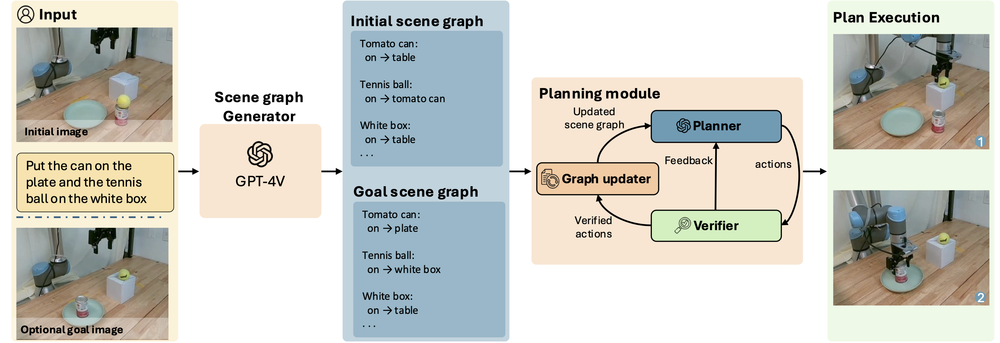
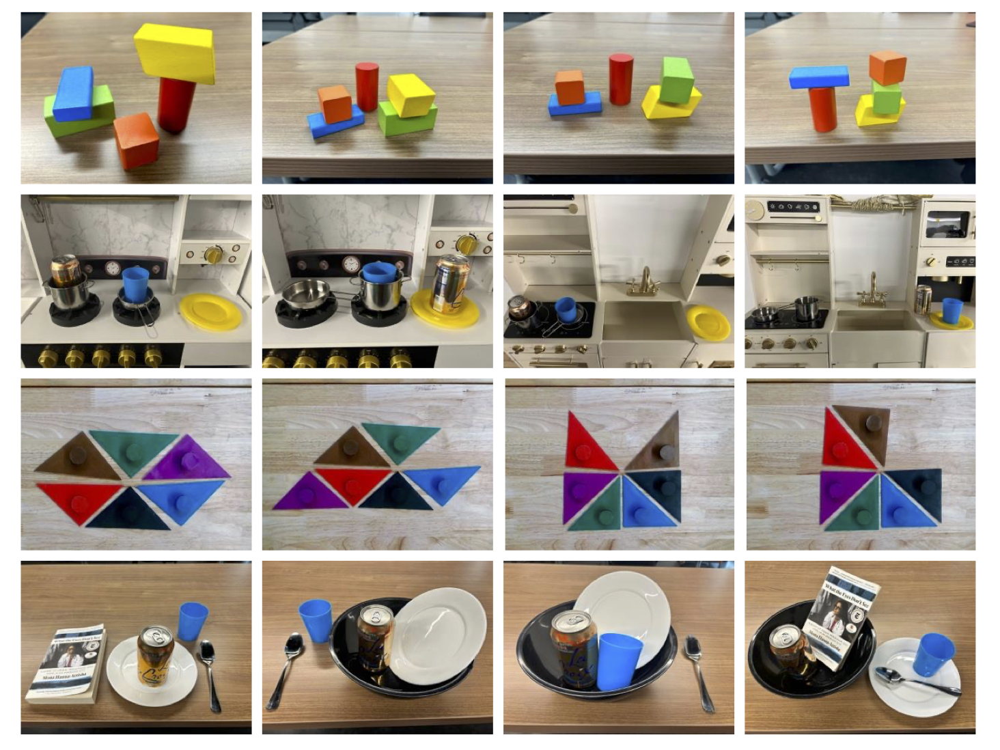

University of Maryland, College Park
ICRA 2026
Recent progress in vision-language models (VLMs) has opened new possibilities for robot task planning, but these models often produce incorrect action sequences. To address these limitations, we propose VeriGraph, a novel framework that integrates VLMs for robotic planning while verifying action feasibility. VeriGraph uses scene graphs as an intermediate representation to capture key objects and spatial relationships, enabling more reliable plan verification and refinement. The system generates a scene graph from input images and uses it to iteratively check and correct action sequences generated by an LLM-based task planner, ensuring constraints are respected and actions are executable. Our approach significantly enhances task completion rates across diverse manipulation scenarios, outperforming baseline methods by 58% on language-based tasks, 56% on tangram puzzle tasks, and 30% on image-based tasks.
VeriGraph is built around one core idea: represent the scene in a form that is easy to reason about. Instead of planning directly from pixels, we first convert the scene into a scene graph, where nodes are objects and edges are relationships such as on and in. This makes the world state explicit.
We use that same structure for planning and verification. The planner proposes actions, and each action is represented as a graph edit operation (for example, removing one support edge and adding another). Because actions are graph edits, we can directly check constraints on the current graph before executing each step. If an action violates constraints, the planner gets feedback and replans. This is why verification is both fast and reliable in VeriGraph.

VeriGraph pipeline. Given a start image and either language instructions or a goal image, a scene-graph module extracts objects and relations to form initial and goal scene graphs. VeriGraph then iteratively proposes high-level actions, validates them against graph-based constraints, and executes feasible actions to update the scene graph. On violation, VeriGraph generates feedback and replans; the loop ends when the planner emits an end token.
We deploy VeriGraph on a physical robot to demonstrate that the high-level plans can be executed in the real world. A modular execution pipeline converts VeriGraph's plans to low-level robot commands using LangSAM for object segmentation and AnyGrasp for grasp prediction.
Planning Results — Task success rate (final scene graph matches the goal)
| Task | SayCan | VILA | Ours (Direct) | Ours |
|---|---|---|---|---|
| Stacking | 0.07 | 0.62 | 0.35 | 0.65 |
| Language Instruction | 0.17 | 0.43 | 0.73 | 0.65 |
| Ref. Image Instruction (Blocks) | – | 0.27 | 0.67 | 0.86 |
| Ref. Image Instruction (Kitchen) | 0.00 | 0.05 | 0.50 | 0.55 |
| Tangram Puzzle | – | 0.16 | 0.72 | 0.72 |
We evaluate VeriGraph on four task groups with varying difficulty: block stacking (stack all blocks into a single pile), kitchen rearrangement (move kitchen objects to target configurations), tangram puzzles (move a tangram piece to align sides with another piece), and tableware arrangement (rearrange plates, cups, and utensils). Each scene has 3–7 objects with varying spatial relationships.

Evaluation scenes from the four task groups (top to bottom: blocks, kitchen, tangram, tableware), illustrating varied object sets and support relations used to test constraint-aware planning.
@article{ekpo2025verigraph,
title = {VeriGraph: Scene Graphs for Execution Verifiable Robot Planning},
author = {Ekpo, Daniel and Levy, Mara and Suri, Saksham and Huynh, Chuong and Swaminathan, Archana and Shrivastava, Abhinav},
year = {2025}
}